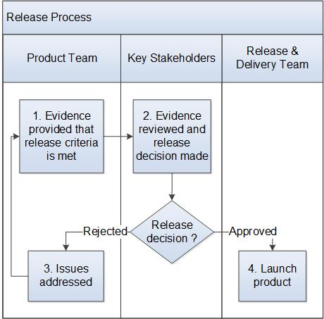

Release Process¶
This process describes how a release candidate build from the engineering configuration management (CM) system is made ready for distribution to customers. The Engineering Program Manager (EPM) is responsible for executing this process.
Entry Criteria |
|
Inputs |
|
Exit Criteria |
Files are packaged and ready for distribution. |
Outputs |
|
Activities¶

Step # |
Activity Name |
Description |
|---|---|---|
1 |
Evidence provided that release criteria is met |
The Product team provides evidence that the release criteria were met. |
2 |
Evidence reviewed and release decision made |
All Key Stakeholders review the evidence and make a release decision. Any issues are recorded. The decision is recorded in the meeting minutes. |
3 |
Issues addressed |
If there are issues that must be addressed before release, the team fixes the issues and updates any evidence. |
4 |
Launch product |
The EPM sends an email capturing the final release candidate, spin value/location, any differentiating content (e.q. changed RPM list) and approval for the Release and Delivery team to start the release process. The Release & Delivery team initiates the product launch. Once Release To Operations (RTO) milestone has been achieved, the EPM sends an email to the Release and Delivery Lead stating the program is ready for General Availabilty (GA). The Release and Delivery Lead initiates the final release tasks which make the product release visible on the external cloud-based software delivery platform (e.g., Wind Share). |
Change Log¶
Date |
Change Request ID |
Version |
Change By |
Description |
05/28/2020 |
N/A |
0.1 |
Shree Vidya Jayaraman |
Initial Draft |
06/22/2020 |
N/A |
0.2 |
Shree Vidya Jayaraman |
Fixed the links based on Doina’s feedback |
07/13/2020 |
N/A |
0.3 |
Shree Vidya Jayaraman |
Update to Launch product step based on kitty & Alan’s feedback |